| 日付 | 2017年11月12日（日） |
|---|---|
| 山域 | 箱根 |
| メンバー | 友人（男1女2子供3） |
| 山行形態 | 子連れ日帰り |
| アクセス | 電車、バス |
| ルート (Map) | 宮城野営業所前 (9:28) - (11:12) 箱根外輪山分岐 - (12:06) 明神ヶ岳 (13:11) - (15:07) 宮城野営業所前 |
今回の登山は妻の友人家族を誘って行ってみることにする。
昨年末にも一度企画していて、今回は2回目だ。
山登りはほとんど初心者のため、比較的簡単に登れる
箱根の明神ヶ岳に行ってみることにする。
久しぶりの電車を使った登山。
箱根湯本駅で電車を降りると、ロマンスカーがやって来る。
運転席は2階にあり、先頭に座ると景色が素晴らしそうだ。
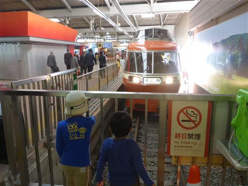
宮城野営業所前バス停に到着。標高460m。

バス停から最初は車道を歩いていく。
目の前に見えるのは箱根外輪山で、目指す明神ヶ岳はその奥にある。
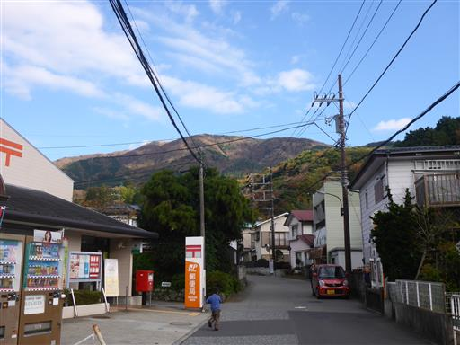
箱根の中心には神山が聳えている。
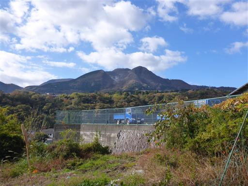
複雑な車道を歩いていくが、標識は完璧に整備されているため迷うことはない。
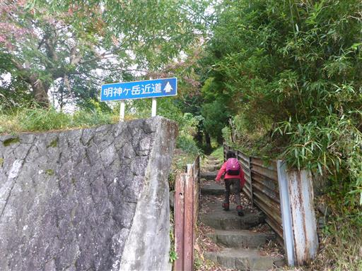
登山口に到着する。ここで妻と娘は5匹のイノシシの群れを目撃。
残念ながら見逃してしまった。
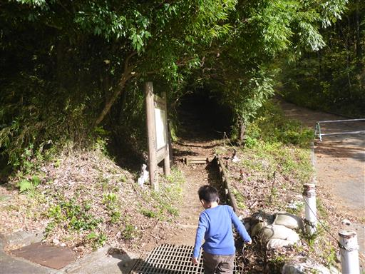
しばらくは民家の側の登山道らしくない登山道が続く。
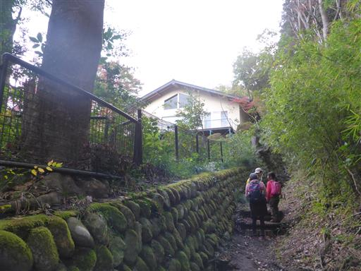
娘が可愛らしい実を発見。きれいに3つに割れている。
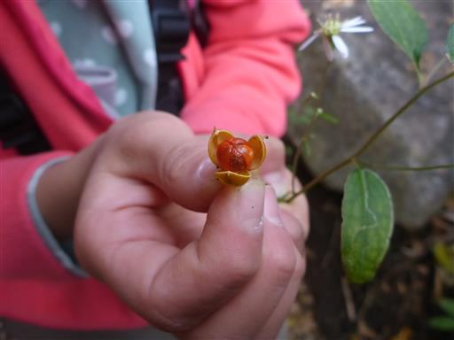
やさしい登山道なのだが、階段の段差がやたら大きい。
息子は足を目一杯上げて登っている。
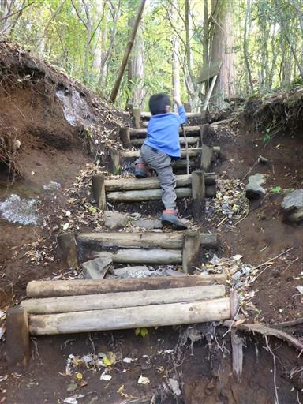
登山道の脇の土が白く染まっている。
かなりの広範囲にわたって白く染まっていたが、これは何なのだろうか？
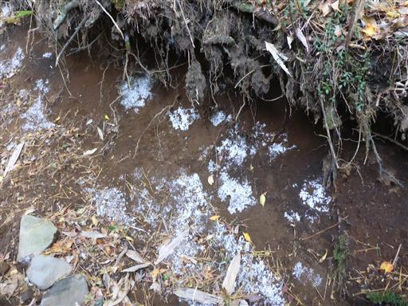
小さな岩場。一応ロープはあるが使う必要性はなさそうだ。
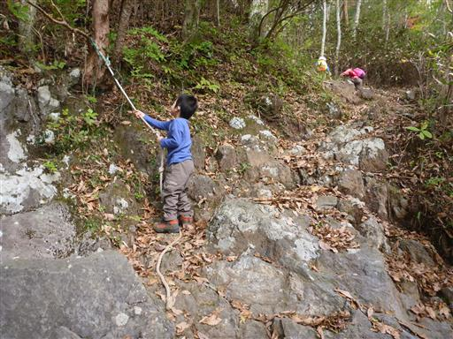
数少ない紅葉。ちょうど紅葉の季節ではあるのだが、
この山は落葉樹が少ないため、ほとんど見られない。
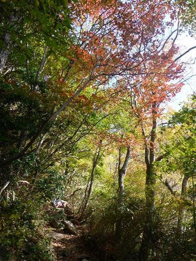
娘が「りすに注意」と言っているので何事かと見てみたら、確かにそう読める。
実際は「たき火、たばこに注意」と書かれている。
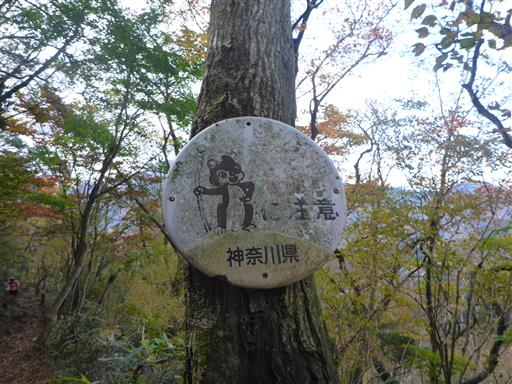
箱根外輪山に到着。ここからは笹に覆われた尾根道になる。
小学生2人組が先に歩いていくので、4歳の息子は意気消沈気味だ。
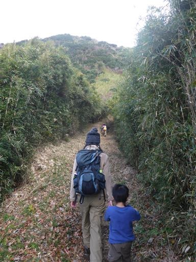
足元にはリンドウがたくさん咲いている。
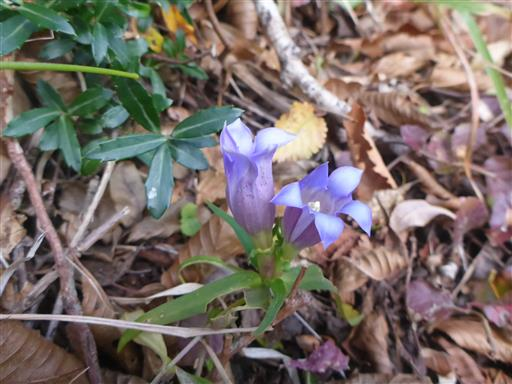
こちらは赤い実がたくさんなっている。赤い実は良く目立つ。
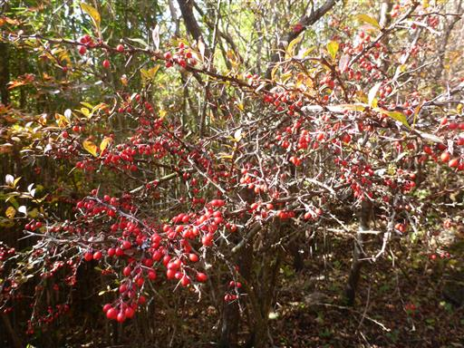
展望が開けた場所に出てくる。
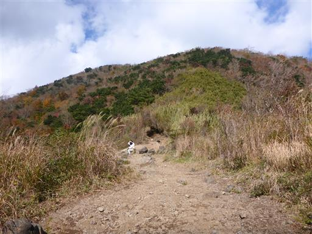
ここから見えるのは神山と箱根駒ヶ岳。大涌谷では激しく噴煙が上がっている。
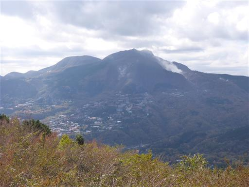
箱根外輪山の山々と遠くに愛鷹山が見える。
残念ながら少し雲が出てきた。山頂からの富士山は期待できなさそうだ。
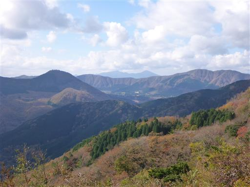
笹に覆われた明るい道を歩いていく。
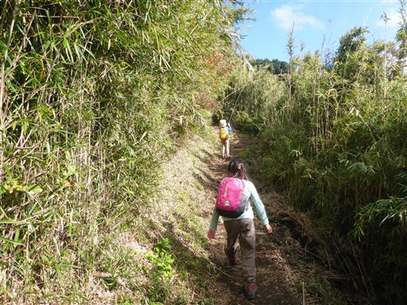
大きなミミズを発見。棒で突っついても反応しなかったのに指で突っつくと暴れ出した。
熱を感知しているのだろうか？登山道の真ん中にいて踏まれそうなため、端に移してやった。
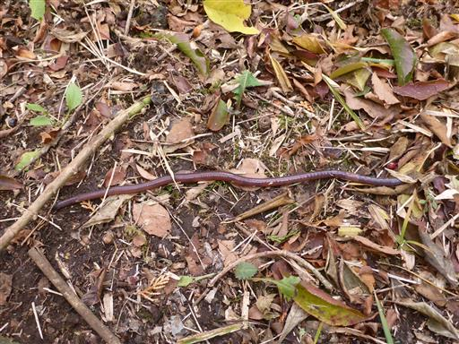
空はだんだんとどんよりして来る。
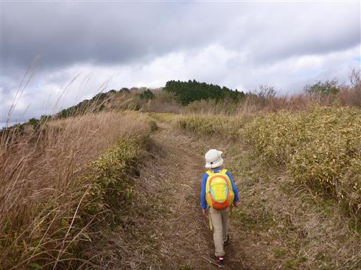
ここまで来ると大涌谷の噴煙がよく見える。いくつかの場所からモクモクと煙が上がっている。
火山活動は活発で、まだ大涌谷には近づけない。
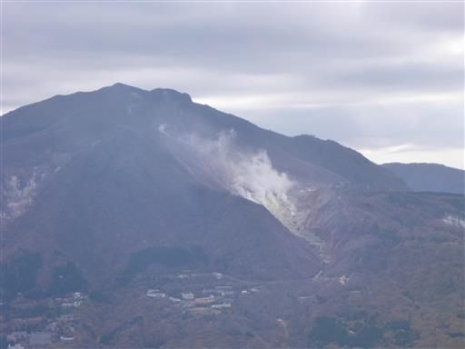
箱根外輪山の外側には真っ青な海が広がっている。
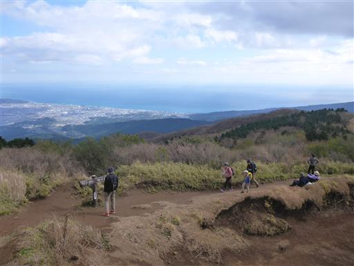
明神ヶ岳山頂に到着。標高1169m。
山頂は寒い。風がさほど強くないのが救いだ。
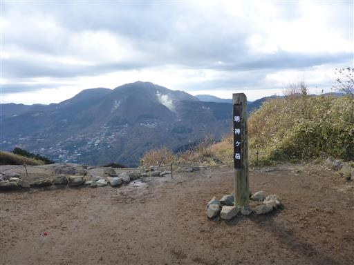
奥に見えるのは箱根外輪山の最高峰・金時山。
その背後に聳えるはずの富士山は残念ながら雲の中だ。
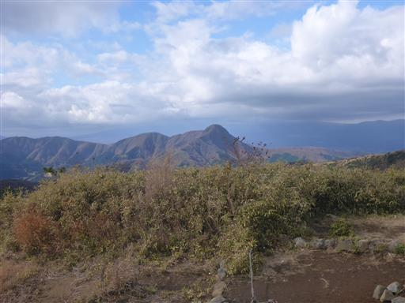
昼食とおやつ休憩をとったら下山開始。無難に元来たルートを戻る。
危ないから走るなー！
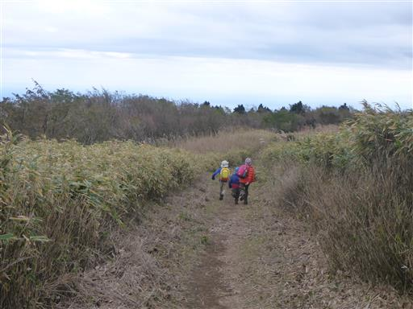
大きな段差は反対向いて下りている。この辺りの状況判断は問題なくできるようになった。
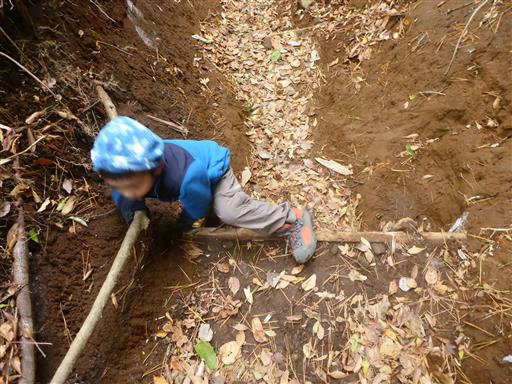
宮城野営業所前バス停に下山。
しかし試練はここからだった。箱根の道が大混雑で、箱根湯本駅に出るまでに
混雑したバスに1時間半乗る羽目になってしまった。
週末のバスの時刻表はあって無いようなものだ。
強羅駅から箱根登山鉄道に乗るべきだったと後悔。
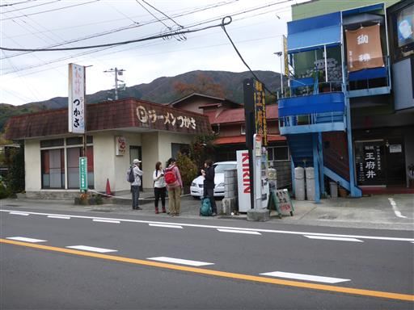
ようやく混雑する箱根湯本駅に到着。疲れた移動となった。
交通手段やメンバーなど慣れない登山で、想定以上に時間がかかり
天気も思ったほど良くなかったのだが、楽しんで参加してもらえたようで良かった。